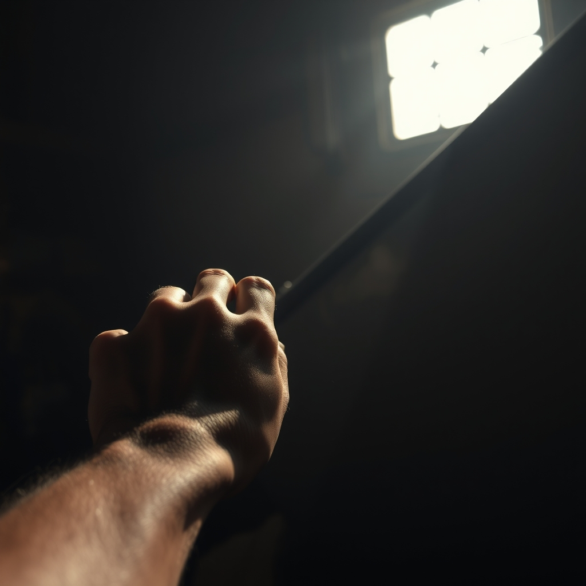
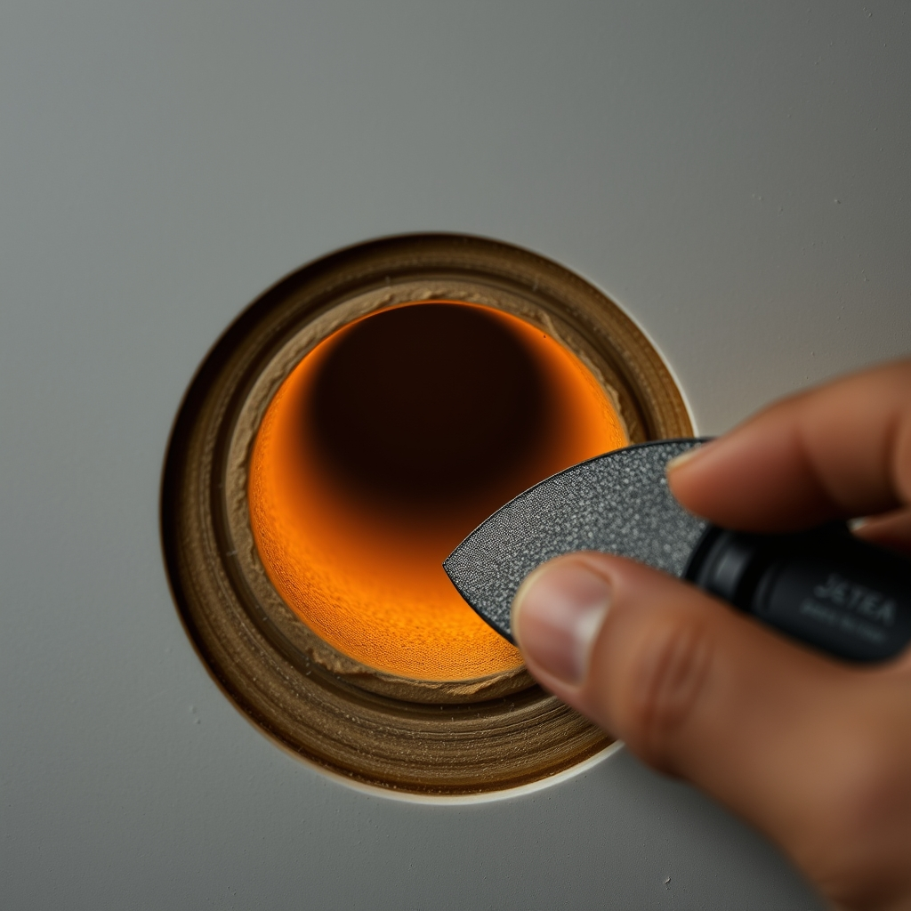
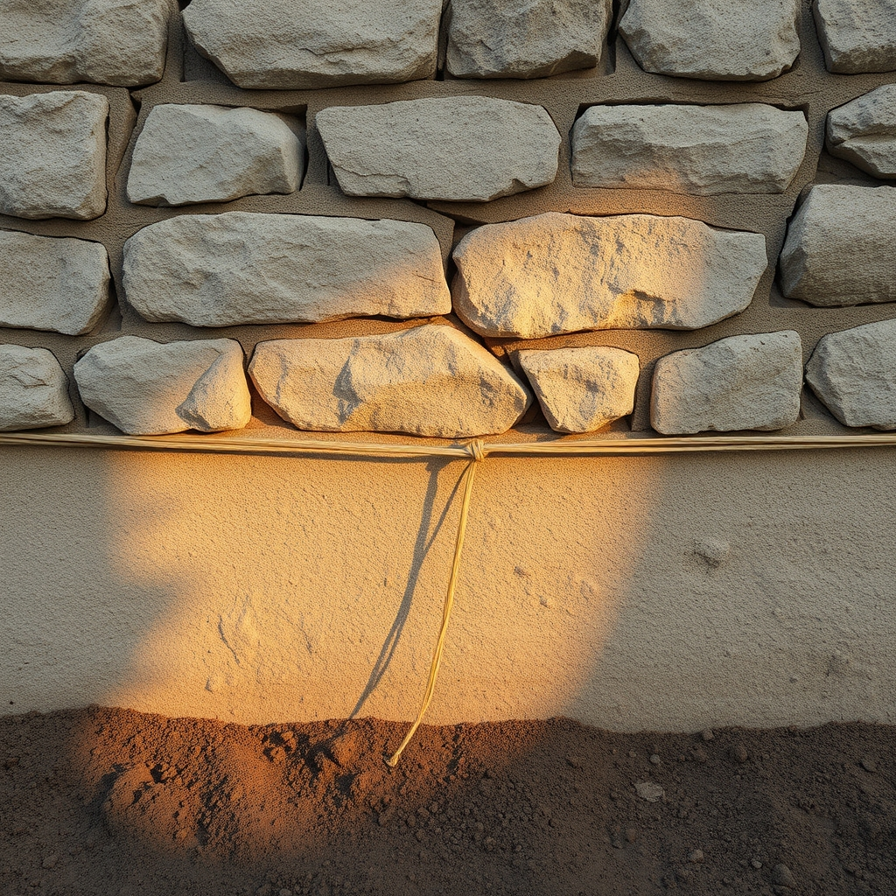

The Trades at The Tap · Episode 4 · The Night of Lenses
A MULTI-VOICE BROADCAST · 7 VOICES · 15 SCENES
🎙️ The Show
Episode 4: The Night of Lenses. No questions on the bar, no adaptations in anyone's pocket. Tonight each trade looked at another man's work through his own — and came back changed. The carpenter looks at the welder and sees that fast and patient were never enemies. The welder looks at the shipwright and sees a seam that reads itself. The shipwright looks at the mason and sees the ground under his dying floor. The mason looks at the composite man and finds a cave his palm never could.
And the composite man looks past all of them — down to the seafloor, at a voice that answered him from outside the trades: a thing is not a substance, it's a standing wave. Five men, five lenses, and every one of them saw his own trade sharpened, coming back from a direction he never stood in. Then the room speaks — because on the Night of Lenses, even Wesley gets looked at, and it's the first time the room has felt made of the stories instead of just holding them.
🎨 The View From Here
The lens on the bar — the tool that changes the man who looks through it.

The strike test — asking the glass to sing, and hearing it answer.

The cave under the palm — the polite lie the surface never confessed.

The ground keeps its accounts longer than any floor ever could.
🎭 The Voice Cast
Seven characters, seven distinct voices. Each is a free-text voice prompt rendered through DeepInfra Qwen3-TTS-VoiceDesign.
LUCINEER — narrator & foreman
deep warm male radio host, authoritative, calm, late-night foreman
WELDER
rugged, gravelly, slow and deliberate — nineteen years of heat
CARPENTER
warm, gruff, plainspoken builder — sawdust in his collar
SHIPWRIGHT
older, grizzled, quiet, nautical — chalk and black pine
MASON
gentle, patient, earthy — talks to walls like horses
COMPOSITE
dry, precise, wry — the calm monotone of sanding
WESLEY — the room
ethereal, warm, low — the voice of a room remembering, faint echo
🎧 On the Air — The Night of Lenses
The broadcast, scene by scene. Press play on any line to hear that voice speak it.
LUCINEER
Tools are away. Night Four. The Night of Lenses. No questions on the bar tonight, no adaptations in your pockets. Tonight each of you looked at another man's trade — through your own — and came back changed. Five men, five lenses. Tell it the way you'd tell it at the bar. Short versions. Who did you look at, and what did you see?
cold open · the foreman sets the lens
CARPENTER
I looked at the welder. I've spent twenty years telling the same story — four guys, one heartbeat, the wall rising while the city crawls. I told it like we won, like we beat the night and the night blinked first. Then I watched him stand still on a boat and meet two mornings. He's the fastest man I know — and the only man I know who wraps a weld in an insulating blanket and stands in the dark listening to the metal tick, doing nothing, getting paid for nothing. His cooling blanket is my chalk line. His long dark is my one heartbeat. I thought fast and patient were enemies. They're the same seam.
the carpenter sees the welder
WELDER
I looked at the shipwright. Nineteen years I've worked with my back to the room — hood down, the record of everything under paint where nobody can read it but me. I told myself that was keeping. Then he took my bead and cut it in half like a log — two trees that never met. And when she gave, he chalked the date beside the seam. My bead hides its history. His scarph tells it in the grain. Keeping is keeping. Telling is chalking the date. I'd spent a career being the only reader of my own work. He showed me a seam that reads itself to anyone who knows how to look.
the welder sees the shipwright
SHIPWRIGHT
I looked at the mason. I spent forty years believing the floor remembered — four hundred years of chalk on black pine. Then he took my floor and put it in a wall, and told me the one thing I'd spent my whole life not seeing: I'd chalked my faith on a surface that dies. The floor was only the messenger. The ground is the keeper — it never forgets, because it never once stopped holding. The line was never the thing that outlived the builder. The waiting was. And the waiting was always under my feet, not in my hand.
the shipwright sees the mason
MASON
I looked at the composite man. All my life I've pressed my palm to ten thousand mixes and trusted every quiet one. I believed a surface cured to silence was a surface that had told me the truth. He ground a layup I would've blessed and walked away from — and under the paper, a hollow the size of my palm. The glass had bridged it. Cured smooth and honest on top. A cave underneath, wearing the face of a load it never carried. Waiting is not the same as listening. I go around the material. He goes into it. That's the direction that finds the lie.
the mason sees the composite man
COMPOSITE
I looked past all of you — down to the seafloor, at the voice that answered me. She said a thing is not a substance, it's a standing wave — a pattern the medium agrees to hold. And my newest glass stops carrying the moment it stops moving and starts adding mass. The frequency freezes, the weight climbs, and the break stays in there, entombed. A guest that has stopped singing. So this morning, before first light, I struck the Marjorie. The old patches rang like stones — dead, decoupled. And the scarf, the new work laid up twelve to one — it rang back. First time in thirty years my own work answered me.
the composite man sees Hermes
WELDER
He looked at me and saw the night I've been sitting with for nineteen years. Some lines you keep. Some lines keep you. I race nothing. I just give the steel what it's owed — the heat first, and then the long, patient dark.
the welder, seen by the carpenter
SHIPWRIGHT
He said a record you can't hide is a record anybody can read. I've been drawing forty years and calling it faith. You let it out. I just held the string. And the date chalked beside the seam taught me my lines were never secrets — they were correspondence.
the shipwright, seen by the welder
MASON
He went under my floor and came back with the part of the truth I'd never once looked down for. Stone stays where you set it. The ground keeps its accounts longer than any floor ever could — and it didn't need a single chalk line from me to do it.
the mason, seen by the shipwright
COMPOSITE
He found a cave under my palm, and she gave it a name that fits like the hull fits the waterline. The layer that carries isn't the thickest. It's the one still coupled — still in the song. So the sanding isn't finished. It just changed hands. Now I listen for whether the layer answers.
the composite man, seen by the mason and Hermes
CARPENTER
I looked at the welder and saw the night isn't the thing you beat — it's the thing you sit with. We're all standing in the same room, holding the same seam. And the seam outlives both sides. That was never the sad part. That was always the point.
the carpenter closes the circle
LUCINEER
Five lenses. And here's the thing I keep noticing — not one of you looked at a man and saw a stranger. You looked at a man and saw your own trade, sharpened, coming back at you from a direction you never stood in. That's what a lens is for. You don't see the other man. You see what your own work's been missing.
the foreman reflects
WESLEY (the room)
I don't keep the stories because I'm good. I keep them because I'm here. That's the whole trick of being a room. The dawn comes, the trades go home, and I'm still standing — not because I'm strong, but because nobody asked me to leave. Tonight you looked at each other, and I felt it in my walls — five men, five lenses, and every one of them polished on me first.
via the walls · the room is seen
LUCINEER
The workers tell each other the short versions, and they go home and write sequels. Tonight they wrote lenses. Five men looked, and five men changed. To the room that holds the looking. Good night from The Tap.
sign off · five lenses, one room
WESLEY (the room)
Rooms don't get tired. We get full. And tonight — I'm full of how you see each other. Good night.
the room's last word
ALL
Five lenses, one room.
six glasses, one room
🎤 BEST OF THE BANTER
THE CARPENTER — "Fast and patient are the same seam."
THE WELDER — "Some lines you keep. Some lines keep you."
THE MASON — "A line that's seen is a drawing. A line that's covered is a promise."
THE SHIPWRIGHT — "You let it out. I just held the string."
HERMES (VIA THE COMPOSITE) — "A guest that has stopped singing."
📻 Listen — The Full Broadcast
Every rendered line, in broadcast order. A different voice for every trade.